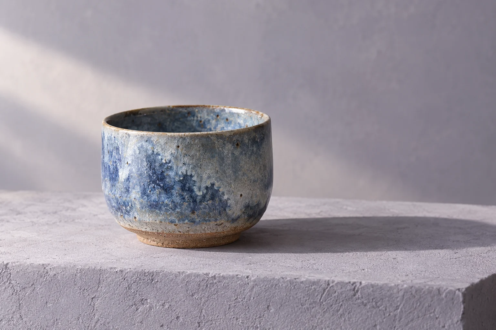
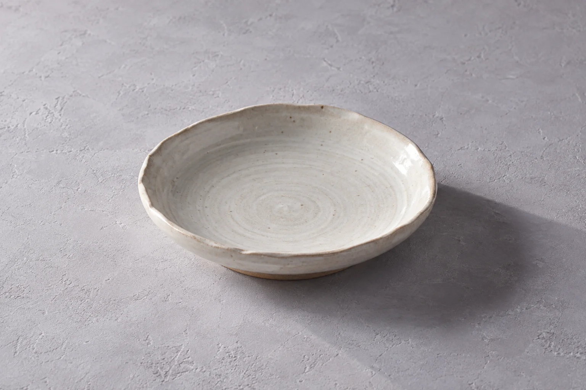
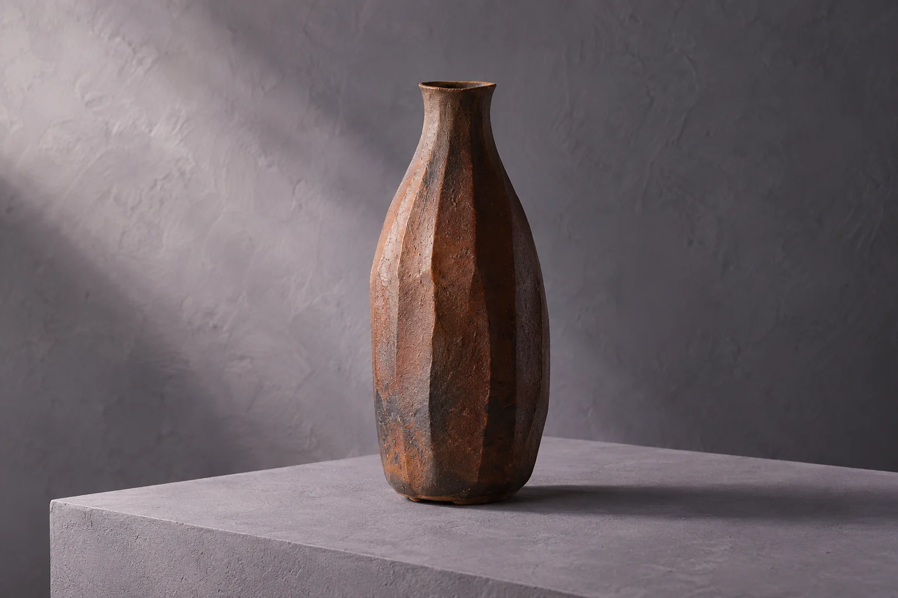

把日常，放慢一些。

今天，想留住哪種風景？
工藝品牌概念AI 原創視覺
從器形出發，再靠近它的紋理。點選器物，看看細節。
顯示全部器物
釉色有深淺，日常有餘裕。

不搶眼，卻接住每一道光。

留一個空位，給今天的花。
器形往上收束，紋理沿著光延伸。不插花時，也是一小片安靜的風景。
一圈拉坯留下的紋路，一點釉色的深淺，一段素土與光的相遇。
形間以三件器物概念，想像工藝如何走進日常。挑選一件，不急著決定；先看形狀，再看看自己想留下什麼。
器物細節